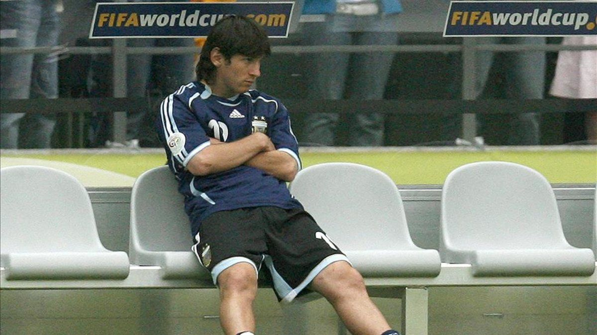
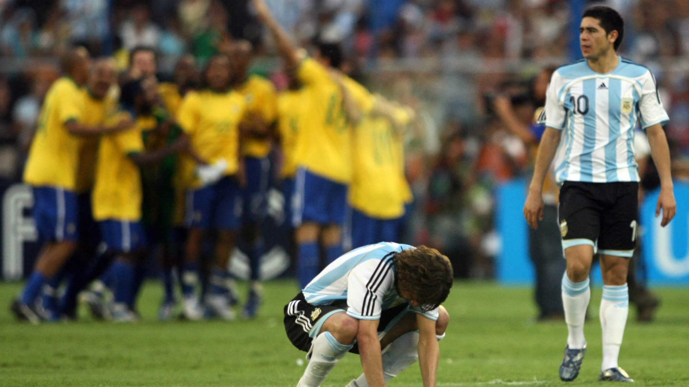
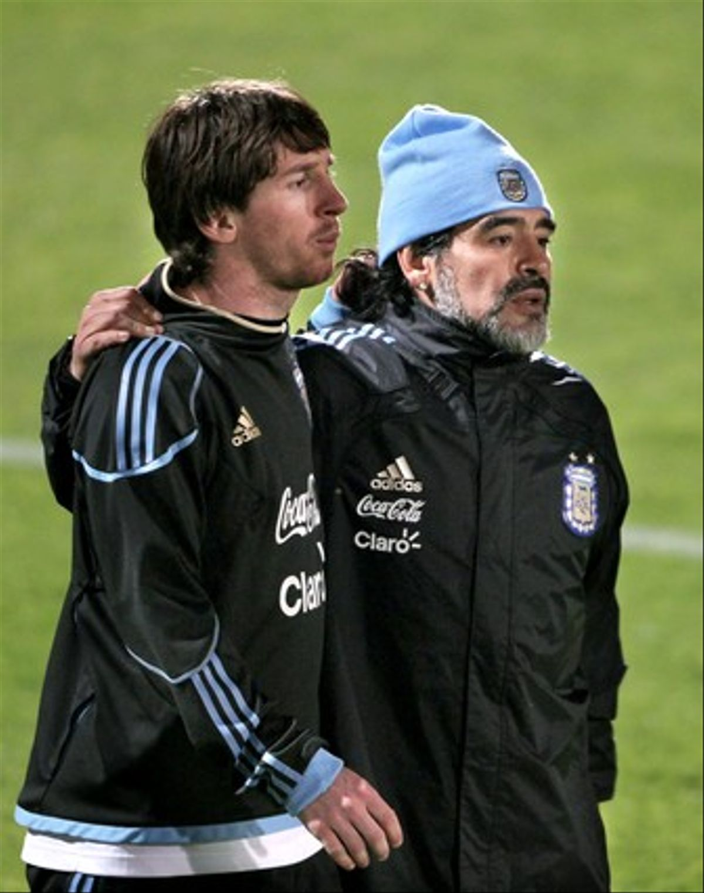
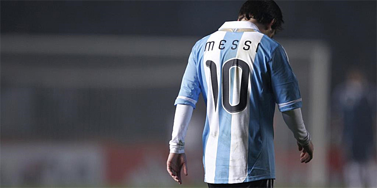
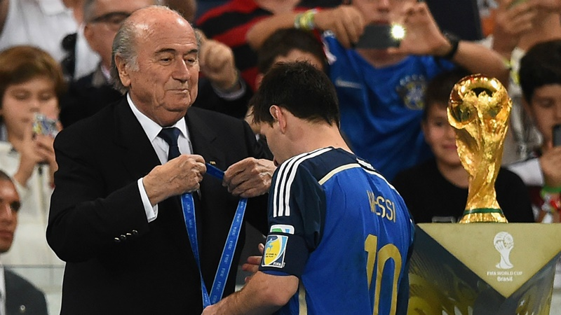
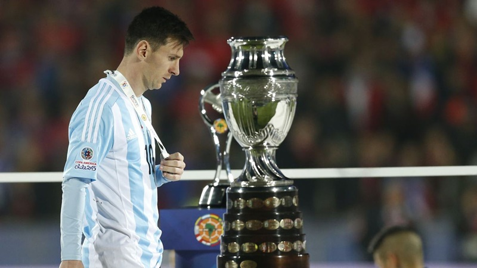
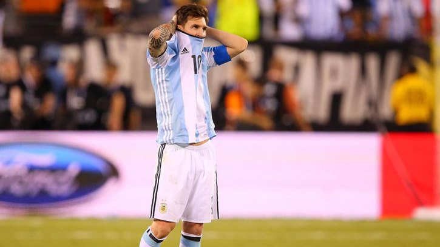
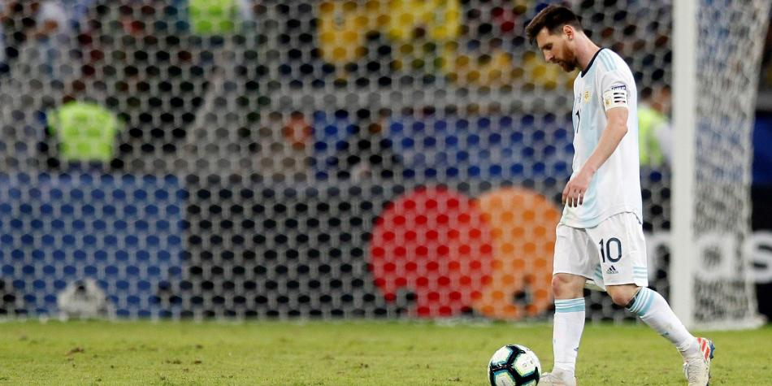

El sábado 2 de julio de 2005 la Selección Juvenil alistó a Oscar Ustari, Lautaro Fórmica, Gabriel Paletta, Ezequiel Garay y Julio Barroso; Pablo Zabaleta, Juan Manuel Torres, Fernando Gago y Rodrigo Archubi; Gustavo Oberman y Lionel Messi. En la segunda etapa ingresaron Lucas Biglia y Sergio "Kun" Agüero, en un plantel que completaron los arqueros Nereo Champagne y Nicolás Navarro, los defensores Gustavo Cabral y David Abraham, los mediocampistas Emiliano Armenteros, Neri Cardozo y Patricio Pérez, y el delantero Pablo Vitti. Resultó una generación virtuosa a luces: Messi se convirtió en el mejor jugador del planeta, el Kun Agüero es una suerte de prócer del Manchester City, Gago ganó nueve títulos con la camiseta de Boca y cuatro con la del Real Madrid, el rosarino Garay también se vistió de "blanco" en el Madrid, Biglia fue nueve veces campeón en Anderlecht de Bélgica y hoy integra el plantel del Milan AC, Paletta defendió la divisa de Italia en el Mundial 2014, Cabral jugó nueve años en España y Zabaleta lleva 12 temporadas en la Premier League. Aquella copa obtenida hace tres lustros es una de las dos que consta en las vitrinas de Messi, junto a la medalla dorada en los Juegos Olímpicos de Pekín 2008, al tiempo que conforme pasaron los años se hizo dueño del primer lugar en el escalafón de máximos anotadores de la Selección de Mayores, un total de 70 goles, por delante de los 54 de Gabriel Batistuta y los 41 del "Kun" Agüero. La Selección Argentina Sub 20 se erigió, sobre todo durante la era del entrenador José Pekerman, en una potencia en la categoría y conquistó en su historial los Mundiales de 1979, 1995, 1997, 2001, 2005 y 2007.
Al ser convocado para el Mundial de Alemania 2006, Messi se convirtió en el jugador argentino más joven en jugar un mundial. Llegó a dicho certamen después de superar una reciente lesión que arrastraba desde marzo. Debutó en la Copa del Mundo en el segundo partido de Argentina, ante Serbia y Montenegro. Ingresó al campo de juego en el minuto 73 con un 3-0 a favor de Argentina. El equipo, por medio de Carlos Tévez, amplió el resultado y Messi dio una asistencia de gol a Hernán Crespo cinco minutos después de haber ingresado y marcó el 6-0 final en el 88; lo que lo convirtió en el sexto jugador más joven en anotar un gol en la historia de los mundiales. Fue titular en el tercer partido del grupo, contra Países Bajos (0-0) y en octavos de final ante México, entró en el minuto 84 y jugó toda la prórroga en la que venció Argentina por 2-1. No participó, sin embargo, en el partido por cuartos de final frente a Alemania en el que Argentina fue eliminada en los penales. Buena parte tanto de la crítica especializada como de la opinión general criticó a Pekerman por esa decisión.
En el Grupo A, formado por Venezuela, Perú, Uruguay y Bolivia, los cuatro equipos lucharon ajustadamente por la clasificación a la siguiente fase. Aunque Perú logró una contundente victoria ante Uruguay en el debut, pero luego sería vencido por Venezuela. Los locales obtuvieron además empates ante Bolivia y Uruguay, lo que permitió su paso a la segunda ronda por primera vez en su historia junto a peruanos y uruguayos, mientras Bolivia se convirtió en el primer equipo eliminado.Manteniéndose invicto en sus tres encuentros, México fue el equipo dominador del Grupo B, compuesto además por Brasil, Chile y Ecuador. El combinado brasileño, pese a ser considerado uno de los mejores equipos del planeta, llegó con un equipo con pocos titulares y que presentó diversas irregularidades en su desempeño a pesar de las victorias ante chilenos y ecuatorianos. Estos últimos se retiraron con tres derrotas, pese a que su plantel era el mismo con el que llegó a octavos de final durante la Copa Mundial de Fútbol de 2006. Argentina, el gran favorito del torneo, se impuso claramente ante Estados Unidos por 4 a 1 en su primer encuentro del campeonato, mientras Paraguay superó a Colombia por 5 a 0. En la fecha siguiente, Paraguay y Argentina derrotaron cómodamente a sus rivales por lo que en el último partido, ambos equipos ya clasificados disputaron el primer lugar del grupo. El solitario gol de Javier Mascherano permitió la victoria argentina y su clasificación como líder del Grupo C. Colombia, pese a su victoria por 1 a 0 al combinado estadounidense, quedó tercera y con puntaje menor al obtenido por Chile y Uruguay, los dos otros equipos que finalizaron en dicha posición, por lo que debieron retirarse del evento. Ya en la segunda ronda, los cuatro equipos más fuertes clasificaron a las semifinales con sendas victorias. Debido a la estructura de clasificación, Brasil y Chile volvieron a encontrarse en cuartos de final, al igual que Venezuela y Uruguay. A pesar del empate en la fase grupal, los uruguayos ganaron por 4 a 1 y acabaron con el sueño de los locales de alcanzar algún lugar en el podio. Chile, en tanto, fue derrotado abrumadoramente por Brasil con un marcador final 6 a 1, que fue seguida por una fuerte polémica en el país andino luego de conocerse una serie de incidentes protagonizados por jugadores del plantel (incluyendo al capitán Jorge Valdivia) en el hotel donde se hospedaban. Los paraguayos también fueron goleados, 6 a 0, esta vez por los invitados mexicanos, mientras Argentina ganó por 4 a 0 a los peruanos. En semifinales, Brasil y Uruguay igualaron tras el tiempo reglamentario a dos goles, tras lo cual se realizó una definición por penales, que permitió el pase del equipo brasileño a la final y así tener opción a revalidar su título. Argentina se convirtió en el segundo finalista, tras derrotar por 3 a 0 a México. En el partido por el tercer lugar, México obtuvo la victoria al derrotar a los uruguayos por 3 a 1. La final se disputó en el Estadio José Encarnación Romero de Maracaibo. Argentina para la mayoría de los especialistas llegó dispuesta a tomar revancha de la derrota en la definición por penales ante Brasil en la final de la Copa América 2004. Sin embargo, el desarrollo del partido fue contrario a lo esperado: Brasil dominó gran parte del encuentro a pesar de su irregular campaña previa y derrotó a los albicelestes con goles de Júlio Baptista y de Daniel Alves sumado a un autogol anotado por Roberto Ayala. Brasil alcanzó así su octavo título y Argentina quedó subcampeón por segunda vez consecutiva.
La Selección de Argentina fue uno de los 32 equipos participantes de la Copa Mundial de Fútbol de 2010, que se realizó en Sudáfrica entre el 11 de junio y el 11 de julio de 2010. Comenzó las eliminatorias sudamericanas entrenada por Alfio Basile. Los malos rendimientos hicieron que El Coco renunciara a su cargo luego de 10 fechas. Para reemplazarlo fue elegido Diego Maradona, que con algo de sufrimiento logró clasificar a su país en la última fecha al ganarle a Uruguay, a su 15º Copa Mundial de la FIFA. En el sorteo quedó emparejada en el Grupo B junto con las selecciones de Nigeria, Corea del Sur y Grecia. Poco tiempo atrás había escogido como cuartel una universidad ubicada en Pretoria y el sorteo la favoreció por las cercanías entre las ciudades en las que debía jugar sus respectivos partidos. Durante el mundial su buen juego hizo ilusionar al país. Las victorias sobre Nigeria, Corea del Sur y Grecia le dieron puntaje ideal (9 puntos) y fue el mejor equipo de los 32 en la fase inicial. En octavos de final el rival fue México, segunda del Grupo A. La Albiceleste bajó un poco el nivel pero pudo superar a Los Aztecas y se metió en cuartos. En esa instancia el contrincante era el mismo que el mundial pasado, Alemania. En este partido Argentina mostró un mal juego nuevamente y fue eliminada con un 4-0 contundente que rompió el sueño de salir campeón luego de 24 años de sequía.
Argentina abrió su Copa América el viernes 1 de julio en el remodelado Estadio Ciudad de La Plata. El partido, pautado para las 21:45, se desarrolló con un frío intenso. Según encuestas argentinas anteriores al encuentro el resultado favorecería claramente a la albiceleste. Argentina, solo pudo jugar un partido mediocre y como lo pudo haber ganado, también lo pudo haber perdido. En el primer tiempo hubo poco juego y situaciones de gol, la mayoría para los locales. La más clara de la primera mitad fue una combinación entre Lavezzi y Messi que Cambiasso no pudo definir. El segundo tiempo trajo enseguida el gol boliviano. Tiro de esquina, centro y Edivaldo Rojas, de taco, la mete al área chica donde Banega no pudo retener la pelota que se le escapó por entre las piernas. Con el gol consumado Sergio Batista se decidió por hacer ingresar a Sergio Agüero. El kun entró con ganas y generó juego para Argentina. Primer tuvo una, que no paso a mayores. Después vino un centro desde la izquierda, al área, donde Burdisso la paro de pecho y con una gran definición el propio kun empató el partido. Luego ambos equipos tuvieron chances. La más clara de Bolivia fue cuando la defensa argentina dejó solo a Martins quedando mano a mano con el arquero Sergio Romero pero el golero, estirándose, le sacó la pelota de los pies al delantero. Terminado el partido se pudo decir que Messi tuvo un buen primer tiempo pero en el segundo, no pudo pesar al igual que Tévez, en todo el partido. Agüero y di María, que entraron desde el banco, le dieron otra cara al ataque del equipo nacional. Así las cosas, el partido debut terminó siendo un sufrimiento inesperado, ya que Argentina jugó mal y no pudo generar situaciones claras durante el mismo. Lionel Messi en el partido inaugural del torneo, ante la Selección de fútbol de Bolivia. En el segundo enfrentamiento el seleccionado se enfrentó ante su similar de Colombia en la ciudad de Santa Fe. El día anterior, en el reconocimiento del campo de juego, unos 5.000 hinchas irrumpieron en al estadio para ver el entrenemiento desbordando las fuerzas de seguridad. Este hecho molesto a Sergio Batista que no pudo realizar ejercicios de pelota parada por la presencia de las cámaras de televisión. Al igual que el primer encuentro el partido argentino volvió a ser muy malo tanto que casi la selección no tuvo posibilidades de marcar. La mejor chance de Argentina estuvo en los pies de Lavezzi pero el portero cafetero salvó a su equipo. En reiteradas ocasiones Sergio Romero evitó la caída del arco de Argentina tanto que fue elegido como el jugador del partido. La selección que cuando llegó desató la locura de los santafesinos, se fue chiflada del estadio. Durante el encuentro se pudieron escuchar cánticos en favor de Diego Maradona y muchas canciones en contra del equipo por el mal rendimiento mostrado. Lionel Messi, de pésima actuación fue el que peor la pasó. Su partido se pudo resumír cuando la albiceleste tenía un inmejorable tiro libre cerca del área. El que remató fue precisamente Messi pero en vez de al arco, o al área, el disparo fue a parar a la tribuna. Desde ese preciso instante el público perdió la paciencia y reventó de bronca. El padre del jugador manifestó, que ante Colombia era la primera vez que su hijo se iba silvado de un estadio. Con 4 cambios, la Selección argentina debió enfrentarse en el último partido del grupo ante la débil selección Sub-22 de Costa Rica en Córdoba. En este partido el nivel de la selección mejoró y con dos goles de Agüero y uno de Di María, Argentina pudo vencer 3 a 0 a Costa Rica y clasificar a la próxima fase.
Parece, no obstante, ser el sino de Messi, la controversia sobre su liderazgo en este siglo, pese a los mil y un detalles que deberían magnificarlo como el gran jugador que aún puede seguir siendo. Y en este Mundial se han empleado a fondo otros futbolistas que parecían políticamente más correctos como ganadores del Balón de Oro. A saber, Thomas Müller, por contar con un representante del campeón aunque no exista esa costumbre histórica en la FIFA; el propio Javier Mascherano, impresionante por su capacidad de liderazgo en el centro del campo y hasta en la defensa de Argentina; o Arjen Robben, brillante y decisivo en las acciones individuales con Holanda. Lo mismo que hay todo tipo de valoraciones para concluir que ellos también hubieran merecido el premio del Balón de Oro, Lionel Messi ha hecho lo suyo en el Mundial para que el trofeo ganado pueda considerarse apropiado. Estos serían los motivos del nuevo éxito de Messi, rememorando partido a partido su actuación en el Mundial, que, de paso, fue de más a menos y partiendo de un punto tan bajo tras una temporada para olvidar con el Barcelona que casi nadie se esperaba el desempeño final del argentino, al que claramente le faltó un gol en la final o que la ganara simplemente Argentina para que con este trofeo individual no existiera la controversia actual. Argentina-Bosnia Herzegovina: 2-1 Con una defensa de cinco y Messi arriba junto a su mejor amigo, el ‘Kun’ Agüero, el azulgrana brilló desde el comienzo, con tantos destellos que se asemejó al de antes, cima que seguramente no pisa desde hace dos temporadas o, más en concreto, desde la lesión muscular en el Parque de los Príncipes de París ante el PSG. Y en esas, cuando tras un arranque fulgurante se había apagado ya un tanto Messi, apareció entre tanto bosnio para marcar un gol de tiro ajustado que supuso a los 64 minutos el momentáneo 2-0 de un 2-1 final. Fue un gol marca de la casa, arrancando desde la medular, tirando pared y agarrando de vuelta la pelota para cosérsela al pie, regatear y marcar desde el borde del área. Un gol y elegido Jugador del Partido. Argentina-Irán: 1-0 Otro milagro de Messi llegó en el descuento, con un gol a los iraníes que le dio el segundo triunfo mundialista y la clasificación a Argentina. Messi tomó la responsabilidad en el minuto 90’+1 y, en una jugada también reconocible de su repertorio, se fue yendo desde la derecha hacia el centro hasta acabar chutando a media altura como un rayo. Pero fue un destello, ganador claro, porque su partido fue un atasco, como el del equipo, ante Irán. Pudo marcar en un par de libres directos y en otra arrancada que acabó en tiro que rozó el palo. Un gol y elegido Jugador del Partido. Vincent Enyeama y Lionel Messi. Vincent Enyeama y Lionel Messi. Vincent Enyeama y Lionel Messi. Fuente de la imagen: AFP Nigeria-Argentina: 2-3 El liderato del grupo lo conquistó Messi con dos goles de autor para derrotar a los nigerianos y devolverles la afrenta olímpica de 1996 en los Juegos de Atlanta. En esta ocasión, el 3-2 para los argentinos se logró gracias a imparable potencia de Messi al rematar un balón rebotado en el poste a los 3 minutos y al tanto de libre directo que anotó de manera perfecta con la zurda pegada al palo izquierdo de Enyeama. Y lo hizo segundos después de otra idéntica que sí salvó el meta nigeriano. Esta partido coronaba a Messi como el mejor del Mundial en la primera fase quizás en pugna con el brasileño Neymar, estrella de la entonces pujante selección local. Dos goles y elegido Jugador del Partido. Argentina-Suiza: 1-0 Tras la fase de grupos, las eliminatorias, comenzando por octavos. Messi jugó su primer partido ante los suizos sin gol en el Mundial, pero resultó a la postre determinante al ser quien le dio el pase del gol en el minuto 118 a Di María. El gol que metió a Argentina en cuartos y le libró de los penalties frente a los correosos suizos. Messi se arrancó por el centro, sorteó rivales como una flecha, condujo y asistió a Di María, quien batió a Diego Benaglio de tiro cruzado. Durante el encuentro, además, sufrió una severa marca suiza, en ocasiones con cuatro rivales pendientes de él. Una asistencia y elegido Jugador del Partido. Argentina-Bélgica: 1-0 Cuartos de final y un rival poderoso, la joven Bélgica que tanto prometía. Messi no se arrugó y dio probablemente el mejor pase de su carrera cuando tiró raso y en largo un centro hacia Di María, quien se lesionó en la acción al chutar a portería. Fue como billar francés, un pase con efecto final y caída hacia la derecha. Además, Messi comenzó la jugada del gol argentino, la del pase a las semifinales. Recibió en la medular, escapó de dos belgas girándose y abrió a la derecha para Di María, cuyo centro tocó en un defensa y habilitó a Higuaín para el gol argentino. Una asistencia y primer partido que no es elegido Jugador del Partido. De Jong, Martins Indi y Messi De Jong, Martins Indi y Messi De Jong, Martins Indi y Messi Fuente de la imagen: Getty Images Holanda-Argentina: 0-0 (2-4 p.p.) Louis van Gaal, perro viejo, preparó un cuidado especial para que Messi no tuviera la libertad vista en su juego durante la Copa del Mundo. Así que Messi tuvo que enfrentarse a un perro de presa como Nigel de Jong y, si este se despistaba, el central Ron Vlaar lo tenía siempre en su punto de mira. Resultado: el Messi menos participativo del Mundial aunque a la hora de la verdad, en la tanda de penalties de desempate, apareció para marcar el suyo sin despeinarse y muy parecido al que uno de sus referentes, Diego Armando Maradona, le marcó también en unas semifinales mundialistas a Italia en 1990. Las comparaciones crecían. Un gol de penalti en la tanda y no fue elegido Jugador del Partido. Alemania-Argentina: 1-0 Volvió el mejor jugador del mundo en el partido más decisivo de su vida. No paró de correr en el primer tiempo, con acciones por la banda reconocibles del Messi de siempre. En la segunda mitad, ahí siguió, ahora más retrasado por el error de Sabella de quitar a Lavezzi por Agüero. Incluso falló el gol que podía decidir la final a los 47 minutos, aunque el perfil de la acción, por la izquierda, lo penalizó, pues sólo habrá marcado desde ahí un gol, al Zaragoza en La Romareda con el Barça hace varias campañas. Tiró paredes contra los alemanes, buscó siempre la verticalidad, se reconcilió con el fútbol pero perdió el Mundial porque el fogonazo ganador fue el de Götze. Tuvo una ocasión clara a los 47 minutos y no fue elegido Jugador del Partido.
"Es terrible lo que me cuesta hacer gol con la selección". Messi se desahogó al término del encuentro ante Colombia tras fallar una ocasión clarísima ante Ospina. "No pensé que se levantaba, pensé que se quedaba ahí en el piso. Cuando le vi sacándola me quería morir". Los números dan la razón al lamento de la estrella de la albiceleste, que baja notablemente sus registros goleadores cuando juega con Argentina. Prácticamente, a la mitad. En el Barça, Messi promedia 0,85 tantos por partido. En concreto, ha marcado 411 goles en 482 partidos. Con su selección, el promedio de Leo baja hasta 0,45. Suma 46 goles en sus 101 partidos como internacional absoluto. A pesar de que su influencia es capital en el juego de Argentina, las cifras goleadoras de Messi son peores que las de algunos delanteros históricos. Gabriel Omar Batistua, máximo goleador de la selección argentina, se retiró con 56 goles en 78 partidos y un promedio más que aceptable de 0,72 goles por partido. Hernán Crespo, tercero en el podio tras Messi, hizo 35 en 64 duelos (0,54). Con todo, el promedio de Messi con la albiceleste es mejor que el de Diego Armando Maradona, autor de 34 goles en 91 partidos (0,37). Si nos fijamos en los actuales compañeros de ataque de Leo Messi, el promedio es similar al del crack culé. El Kun Agüero llega al 0,44 con 28 goles en 64 partidos. Curiosamente, Higuaín supera a ambos (0,50) con 25 tantos en 50 partidos. Tévez, sin embargo, se queda en un pobre 0,18 con 13 goles en 72 partidos.
Tras perder su cuarta final (la tercera seguida) con Argentina, Leo Messi aseguró en zona mixta que deja la selección argentina. "Es difícil, el momento es duro para cualquier análisis. En el vestuario pensé que se terminó para mí la selección. No es para mí. Es lo que siento ahora. Es una tristeza grande que me vuelva a pasar. Me tocó fallar el penalti a mí, era importantísimo. Ya está, es por el bien de todos. No nos conformamos con llegar a la final y no ganarla. Ya lo intenté mucho, ser campeón con Argentina. No se dio, no lo pude conseguir", confesó. Messi mandó a las nubes el primer penalti de Argentina A sus 29 años, Messi, máximo goleador histórico de Argentina (55 goles), capitán y estrella absoluta del combinado de Martino, deja la selección después de 113 partidos y once años en la 'Albiceleste' en los que ha disputado cuatro Copas América y tres Mundiales cayendo en cuatro finales (tres de Copa América (2007, 2015 y 2016) y una de la Copa del Mundo (2014) con su país. Una losa. "Lamentablemente, el que más jodido se va es Leo por el penal. Es la vez que peor le vi en el vestuario", afirmó Agüero. Messi se derrumbó tras fallar el penalti Messi, cinco veces ganador del Balón de Oro, récordman goleador del Barcelona y de La Liga (suma 453 tantos vestido de azulgrana y 312 en el torneo doméstico español), coleccionista de títulos (ocho Ligas, cuatro Champions... y así hasta 28 entorchados con el Barcelona) no vestirá más la camiseta albiceleste. Con el hashtag #NotevayasLeo los aficionados piden que siga en la selección. La noticia ha causado una enorme conmoción en Argentina.
Leo Messi estalló tras el final del partido y volvió a cargar contra la Conmebol. El capitán de La Albiceleste se negó a participar en la recogida de medallas y explicó la expulsión y sus motivos para haberse quedado en el vestuario durante la entrega de la medalla. Fue el último jugador argentino en aparecer ante los medios. Y dejó estas perlitas....La expulsión"Medel va siempre al límite. Con una amarilla se hubiese terminado para los dos, pero bueno, quizás lo que dije la vez pasada pasó facturas. Lo importante es que el equipo terminó bien la Copa. Quizá esto fue mandado y me pasaron factura por lo que dije". Así fue la expulsión de Messi: empujón a Medel, amago de cabezazo del chileno y tángana La polémica "Se podría haber revisado la jugada de la expulsión y no se usó el VAR. Más allá de la bronca de no poder terminar este partido, me voy tranquilo".No recoger la medalla"Nosotros no tenemos que ser parte de esta corrupción, de las faltas de respeto que sufrimos durante esta Copa América. Estábamos para más y no nos dejaron estar en la final. La corrupción, los árbitros y todo eso no permitieron que la gente disfrute del fútbol".Papel en la Copa América"Yo me voy tranquilo, con la cabeza alta y orgulloso de este grupo que dio todo. Espero que se respete este grupo, que tiene mucho para dar". El pique con Medel venía de antes: este pudo ser el origen de la expulsión de Messi El equipo"El grupo mostró mucha personalidad; no es fácil empezar perdiendo (Colombia) y luego empatando (Paraguay). Eso nos hizo más fuertes y terminamos de una manera muy positiva".El partido"Hoy encontramos los goles y eso hace que el equipo juegue de otra manera, te da más libertades. Pero tanto este como el partido con Brasil fueron buenos".La final"La Copa está armada para Brasil, ojalá los árbitros y el VAR no influyan y dejen competir a Perú, pero lo veo difícil". La pillería de Messi antes de ver la roja: Leo se inventó el primer gol de Argentina. Continuidad de Scaloni: "Creo que Scaloni también fue creciendo a la par del equipo, del grupo. Encontramos una idea de juego, una buena dinámica" La posible sanción "Que hagan lo que quieran, la verdad hay que decirla".